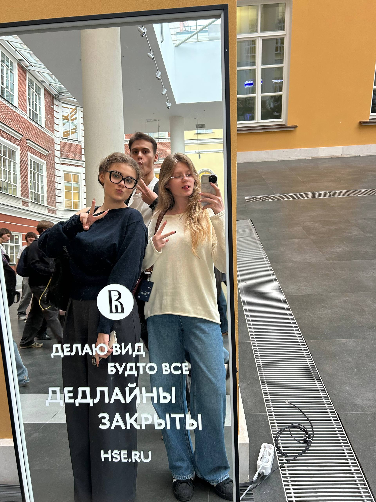

добро пожаловать
Туристический маршрут по Карелии.
Десять мест, связанных одной историей.
историко-культурный маршрут

Привет! Мы Юля, Маша и Дима — студенты НИУ ВШЭ и авторы этого маршрута.
Мы создали путеводитель по Карелии, чтобы рассказать об интересных местах региона и их истории. Во время работы над проектом мы собрали факты о десяти локациях и постарались сделать маршрут не только познавательным, но и интересным для путешественников.
Надеемся, что наш путеводитель поможет вам узнать Карелию немного лучше и, возможно, вдохновит посетить эти места!
Юля, Маша и Дима ❤️